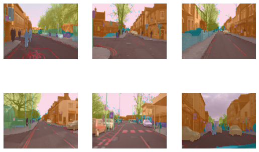
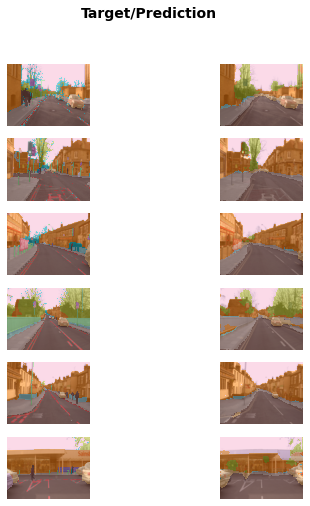
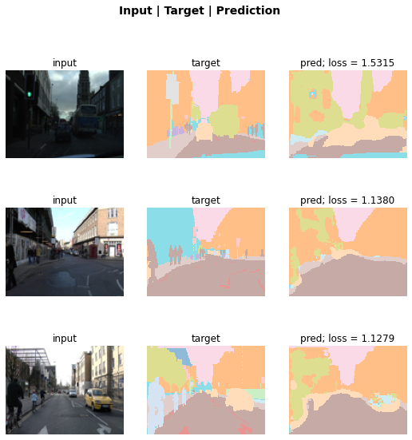
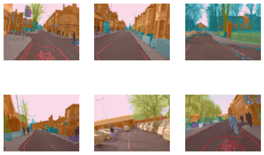
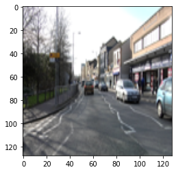
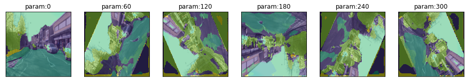
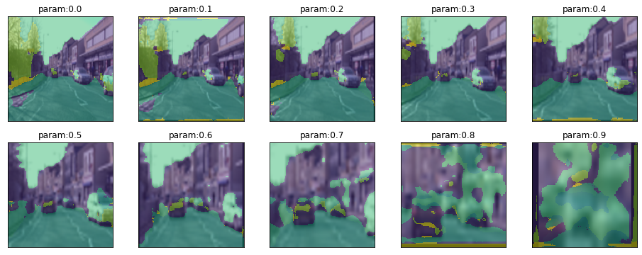

from fastai.vision.all import *CamVid Demo
This is a small demo showing that the functionality of misas is not at all limited to the domain of medical imaging. However, the main use case for the authors of misas is currently medical imaging, therefore this is just a proof of concept. It should give you an idea on how to work with a new dataset. It can be extended if users need it. The example builds on the camvid example in the fastai1 documentation.
Please reach out via GitHub if you have problems using misas on your own dataset.
path = untar_data(URLs.CAMVID_TINY)codes = np.loadtxt(path/'codes.txt', dtype=str)
codesarray(['Animal', 'Archway', 'Bicyclist', 'Bridge', 'Building', 'Car',
'CartLuggagePram', 'Child', 'Column_Pole', 'Fence', 'LaneMkgsDriv',
'LaneMkgsNonDriv', 'Misc_Text', 'MotorcycleScooter', 'OtherMoving',
'ParkingBlock', 'Pedestrian', 'Road', 'RoadShoulder', 'Sidewalk',
'SignSymbol', 'Sky', 'SUVPickupTruck', 'TrafficCone',
'TrafficLight', 'Train', 'Tree', 'Truck_Bus', 'Tunnel',
'VegetationMisc', 'Void', 'Wall'], dtype='<U17')fnames = get_image_files(path/"images")def label_func(fn): return path/"labels"/f"{fn.stem}_P{fn.suffix}"cam_fn = fnames[0]
mask_fn = label_func(fnames[0])
cam_img = lambda: Image.open(cam_fn).convert("RGB")
mask = lambda: Image.open(mask_fn).convert("I")dls = SegmentationDataLoaders.from_label_func(
path, bs=8, fnames = fnames, label_func = label_func, codes = codes
)dls.show_batch(max_n=6)
learn = unet_learner(dls, resnet34)Downloading: "https://download.pytorch.org/models/resnet34-b627a593.pth" to /home/markus/.cache/torch/hub/checkpoints/resnet34-b627a593.pthlearn.fine_tune(6)| epoch | train_loss | valid_loss | time |
|---|---|---|---|
| 0 | 3.004354 | 2.548569 | 00:30 |
| epoch | train_loss | valid_loss | time |
|---|---|---|---|
| 0 | 2.048129 | 1.562803 | 00:37 |
| 1 | 1.704228 | 1.354810 | 00:33 |
| 2 | 1.483399 | 1.031199 | 00:30 |
| 3 | 1.315127 | 0.921900 | 00:27 |
| 4 | 1.164001 | 0.827559 | 00:33 |
| 5 | 1.051317 | 0.808568 | 00:32 |
learn.show_results(max_n=6, figsize=(7,8))
interp = SegmentationInterpretation.from_learner(learn)
interp.plot_top_losses(k=3)
camvid = DataBlock(blocks=(ImageBlock, MaskBlock(codes)),
get_items = get_image_files,
get_y = label_func,
splitter=RandomSplitter(),
batch_tfms=aug_transforms(size=(120,160)))dls = camvid.dataloaders(path/"images", path=path, bs=8)dls.show_batch(max_n=6)
# learn.save('mini_train')plt.imshow(cam_img().resize((128,128)))<matplotlib.image.AxesImage>
from misas.core import *
from misas.core import default_cmaplearn.prepareSize = lambda item: item.resize((128,128))class Fastai_model:
def __init__(self, learner):
self.trainedModel = learner
self.resize128 = lambda x: x.resize ((128,128))
self.trainedModel.remove_cbs(ProgressCallback)
def prepareSize(self, item):
return self.resize128(item)
def predict(self, image):
image = PILImage.create(np.array(image))
output = self.trainedModel.predict(image)
output = PILImage.create(output [0])
output = Image.fromarray(np.array(output)) #mode="I"
return outputCam_vid = Fastai_model(learn)plot_series(get_rotation_series(cam_img(), Cam_vid), vmax=31, vmin=0)
plot_series(get_zoom_series(cam_img(), Cam_vid), vmax=31, vmin=0, nrow=2)
found_classes = np.unique(np.array(Cam_vid.predict(cam_img())))codes[found_classes]array(['Building', 'Car', 'LaneMkgsDriv', 'Road', 'Sidewalk', 'Sky',
'Tree', 'Void', 'Wall'], dtype='<U17')result = eval_rotation_series(cam_img(),mask(),Cam_vid,components=codes)When plotting the evaluation series, it makes sense to only plot classes that actually occur.
plot_eval_series(result[np.append("deg",codes[found_classes])])